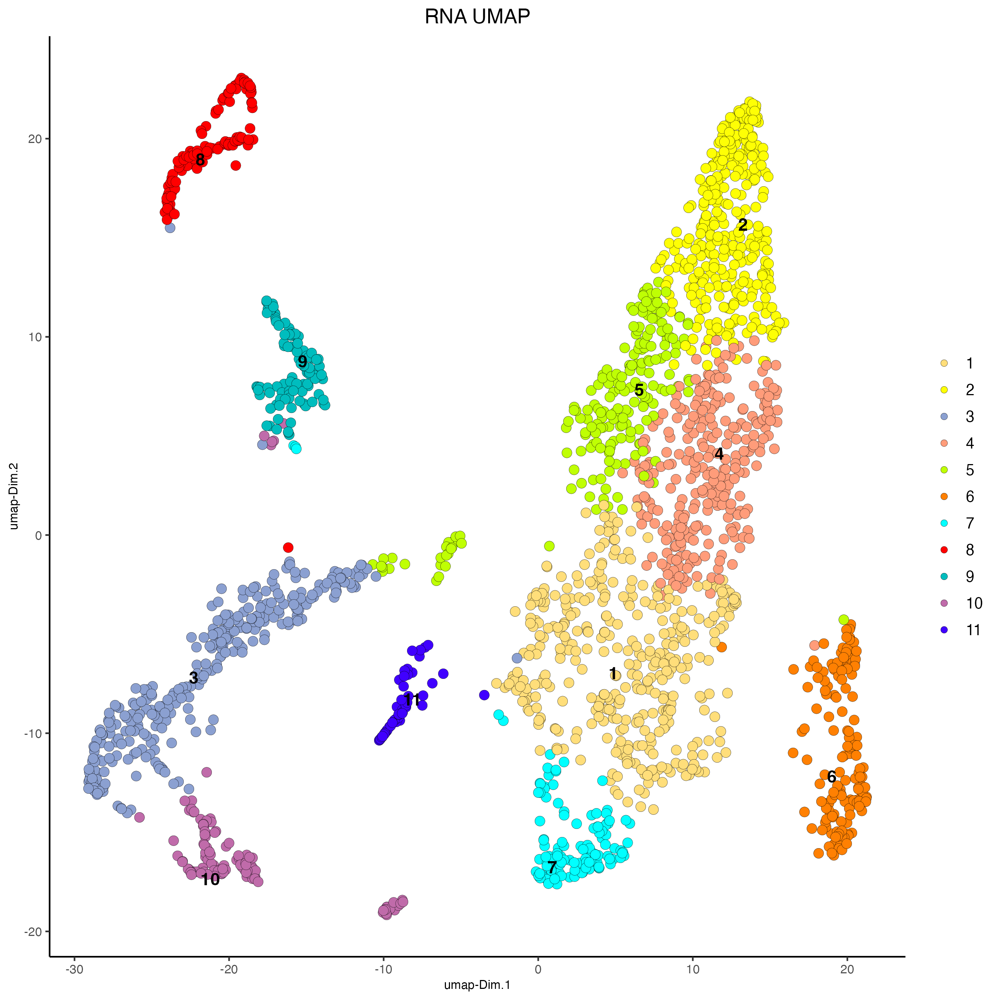
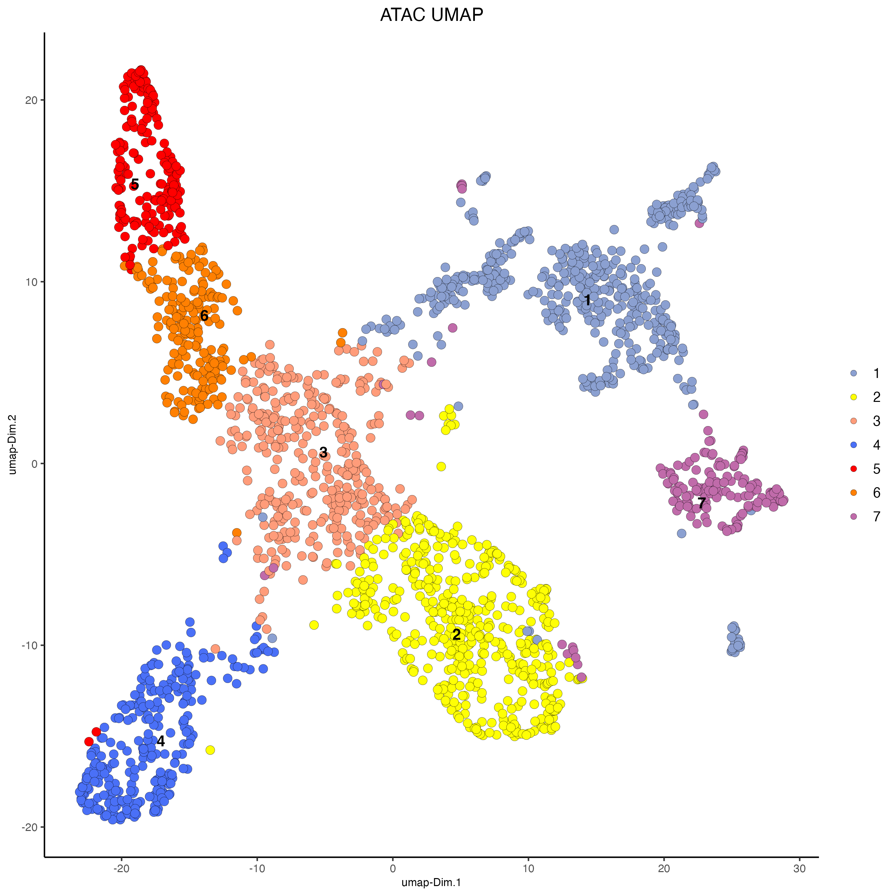
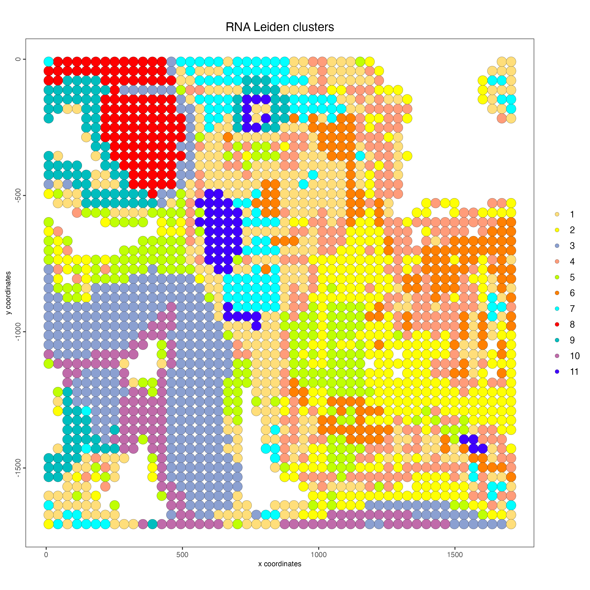
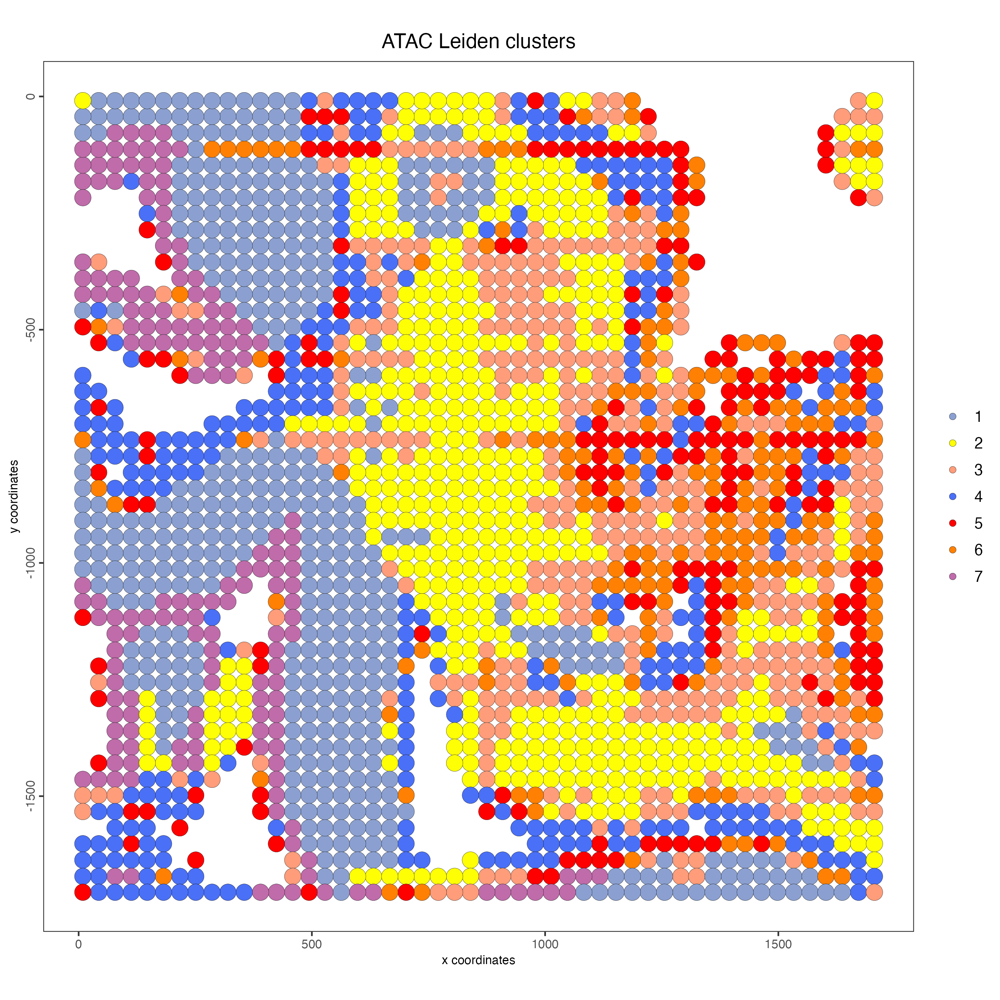
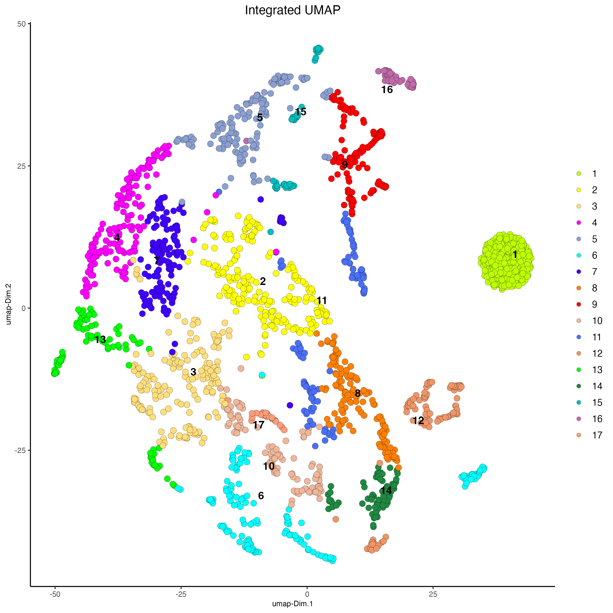
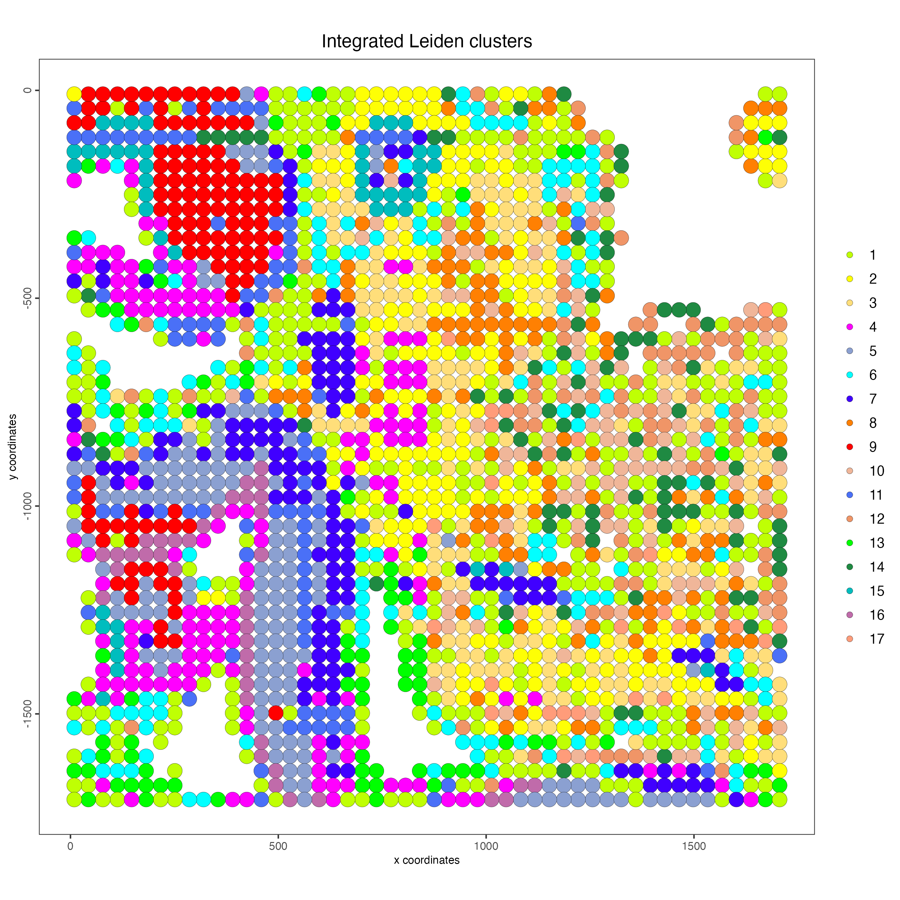

vignettes/multiomics_rna_atac_me13.Rmd
multiomics_rna_atac_me13.RmdThe Mouse embryo ME13 spatial RNA-ATAC seq was originally published by Zhang et al. 2023 and downloaded from https://www.ncbi.nlm.nih.gov/geo/query/acc.cgi?acc=GSE205055.
For running this tutorial, we will use the dataset ME13 (50 μm). Download the following files and unzip the spatial folder:
# Ensure Giotto Suite is installed
if(!"Giotto" %in% installed.packages()) {
pak::pkg_install("drieslab/Giotto")
}
# Ensure the Python environment for Giotto has been installed
genv_exists <- Giotto::checkGiottoEnvironment()
if(!genv_exists){
# The following command need only be run once to install the Giotto environment
Giotto::installGiottoEnvironment()
}Read the expression matrix 20900 genes, 2172 cells
library(Giotto)
data_path <- "/path/to/data/"
rna_expression <- read.delim(file.path(data_path, "GSM6799937_ME13_50um_matrix_merge.tsv.gz"))
spatial_locs <- read.csv(file.path(data_path,
"ME13_50um_spatial/tissue_positions_list.csv"),
header = FALSE)
spatial_locs <- spatial_locs[, c("V1", "V6", "V5")]
colnames(spatial_locs) <- c("cell_ID", "sdimx", "sdimy")
rownames(spatial_locs) <- spatial_locs$cell_ID
spatial_locs <- spatial_locs[colnames(rna_matrix),]We will use the ArchR package to map the atac fragments to the genome and create the Tile Matrix.
library(ArchR)
# Add reference genome
ArchR::addArchRGenome('mm10')
arrow_file <- ArchR::createArrowFiles(
inputFiles = file.path(data_path, "GSM6801813_ME13_50um_fragments.tsv.gz"),
sampleNames = "atac",
minTSS = 0, # Minimum TSS enrichment score
minFrags = 0, # Minimum number of fragments
maxFrags = 1e+07, # Maximum number of fragments
TileMatParams = list(tileSize = 5000), # Tile size for creating accessibility matrix
offsetPlus = 0,
offsetMinus = 0,
force = TRUE # Overwrite existing files
)
proj <- ArchR::ArchRProject(
arrow_file,
outputDirectory = "ArchRProject"
)
tile_matrix <- ArchR::getMatrixFromArrow(
ArrowFile = "ArchRProject/ArrowFiles/atac.arrow",
useMatrix = "TileMatrix",
binarize = TRUE
)
tile_matrix_dg <- tile_matrix@assays@data$TileMatrix # Dimensions: 526765 x 2172
rm(tile_matrix)
cell_ids <- colnames(tile_matrix_dg)
cell_ids <- gsub(pattern = "atac#", replacement = "", x = cell_ids)
cell_ids <- gsub(pattern = "-1", replacement = "", x = cell_ids)
colnames(tile_matrix_dg) <- cell_ids
atac_cells <- colnames(tile_matrix_dg)
rna_cells <- colnames(rna_matrix)
all_cells <- c(rna_cells, atac_cells)
commom_cells <- all_cells[duplicated(all_cells)]
spatial_locs <- spatial_locs[commom_cells, ]
rna_matrix <- rna_matrix[, commom_cells]
atac_matrix <- tile_matrix_dg[, commom_cells] After keeping only the cells in common, you should get an atac matrix with 526765 rows and 2172 cells
results_folder <- "/path/to/results/"
instructions <- createGiottoInstructions(results_folder = results_folder,
save_plot = TRUE,
show_plot = FALSE,
return_plot = FALSE)
g <- createGiottoObject(expression = list("raw" = rna_matrix,
"raw" = atac_matrix),
expression_feat = c("rna", "atac"),
spatial_locs = spatial_locs,
instructions = instructions)
g <- flip(g,
direction = "vertical")
g_image <- createGiottoImage(gobject = g,
mg_object = file.path(data_path, "ME13_50um_spatial/tissue_lowres_image.png"))
g <- addGiottoImage(g,
images = list(g_image))
# RNA
g <- filterGiotto(g,
min_det_feats_per_cell = 50,
feat_det_in_min_cells = 50)
# RNA
g <- normalizeGiotto(g,
feat_type = "rna")
g <- runIterativeLSI(
gobject = g,
feat_type = "atac",
expression_values = "raw",
lsi_method = 2,
resolution = 0.2,
sample_cells_pre = 20000,
var_features = 30000,
dims = 30
)
# RNA
g <- runUMAP(g,
feat_type = "rna")
# ATAC
g <- runUMAP(g,
feat_type = "atac",
dim_reduction_to_use = "lsi",
dim_reduction_name = "atac_iterative_lsi")
# RNA
g <- createNearestNetwork(g,
feat_type = "rna")
g <- doLeidenCluster(g,
feat_type = "rna",
resolution = 0.8)
# ATAC
g <- createNearestNetwork(g,
feat_type = "atac",
dim_reduction_to_use = "lsi",
dim_reduction_name = "atac_iterative_lsi")
g <- doLeidenCluster(g,
feat_type = "atac",
network_name = "sNN.lsi",
resolution = 0.6,
name = "atac_leiden_clus")
# RNA
plotUMAP(g,
feat_type = "rna",
cell_color = "leiden_clus",
point_size = 3,
cell_color_code = c("1" = "#FFDE7A",
"2" = "#FEFF05",
"3" = "#8BA0D1",
"4" = "#FF9C7A",
"5" = "#BFFF04",
"6" = "#FF8002",
"7" = "#01FFFF",
"8" = "#FF0000",
"9" = "#00BDBE",
"10" = "#C06BAA",
"11" = "#4000FF"
),
title = "RNA UMAP")
# ATAC
plotUMAP(g,
feat_type = "atac",
dim_reduction_name = "atac.umap",
cell_color = "atac_leiden_clus",
point_size = 3,
cell_color_code = c("1" = "#8BA0D1",
"2" = "#FEFF05",
"3" = "#FF9C7A",
"4" = "#4a70f7",
"5" = "#FF0000",
"6" = "#FF8002",
"7" = "#C06BAA"
),
title = "ATAC UMAP")
# RNA
spatPlot2D(g,
feat_type = "rna",
cell_color = "leiden_clus",
show_image = TRUE,
point_size = 5,
point_alpha = 0.5,
cell_color_code = c("1" = "#FFDE7A",
"2" = "#FEFF05",
"3" = "#8BA0D1",
"4" = "#FF9C7A",
"5" = "#BFFF04",
"6" = "#FF8002",
"7" = "#01FFFF",
"8" = "#FF0000",
"9" = "#00BDBE",
"10" = "#C06BAA",
"11" = "#4000FF"
),
title = "RNA Leiden clusters")
# ATAC
spatPlot2D(g,
feat_type = "atac",
cell_color = "atac_leiden_clus",
point_size = 5,
point_alpha = 0.5,
show_image = TRUE,
cell_color_code = c("1" = "#8BA0D1",
"2" = "#FEFF05",
"3" = "#FF9C7A",
"4" = "#4a70f7",
"5" = "#FF0000",
"6" = "#FF8002",
"7" = "#C06BAA"),
title = "ATAC Leiden clusters")
# RNA
g <- createNearestNetwork(g,
feat_type = "rna",
type = "kNN",
dimensions_to_use = 1:10,
k = 10)
# ATAC
g <- createNearestNetwork(g,
feat_type = "atac",
dim_reduction_to_use = "lsi",
dim_reduction_name = "atac_iterative_lsi",
type = "kNN",
dimensions_to_use = 1:10,
k = 10)
g <- runIntegratedUMAP(
gobject = g,
spat_unit = "cell",
feat_types = c("rna", "atac"),
integrated_feat_type = "rna_atac",
integration_method = "WNN",
matrix_result_name = "theta_weighted_matrix",
k = 10,
spread = 10,
min_dist = 0.01,
force = TRUE,
seed = 1234
)
g <- doLeidenCluster(g,
feat_type = "rna",
nn_network_to_use = "kNN",
network_name = "integrated_kNN",
resolution = 1.2,
name = "integrated_leiden_clus")
plotUMAP(g,
feat_type = "rna",
dim_reduction_name = "integrated.umap",
cell_color = "integrated_leiden_clus",
point_size = 3,
cell_color_code = c("1" = "#BFFF04",
"2" = "#FEFF05",
"3" = "#FFDE7A",
"4" = "#FF00FF",
"5" = "#8BA0D1",
"6" = "#01FFFF",
"7" = "#4000FF",
"8" = "#FF8002",
"9" = "#FF0000",
"10" = "#f0b699",
"11" = "#4a70f7",
"12" = "#f09567",
"13" = "green",
"14" = "#1F8A42",
"15" = "#00BDBE",
"16" = "#C06BAA",
"17" = "#FF9C7A"
),
title = "Integrated UMAP")
spatPlot2D(g,
feat_type = "rna",
cell_color = "integrated_leiden_clus",
point_size = 5,
cell_color_code = c("1" = "#BFFF04",
"2" = "#FEFF05",
"3" = "#FFDE7A",
"4" = "#FF00FF",
"5" = "#8BA0D1",
"6" = "#01FFFF",
"7" = "#4000FF",
"8" = "#FF8002",
"9" = "#FF0000",
"10" = "#f0b699",
"11" = "#4a70f7",
"12" = "#f09567",
"13" = "green",
"14" = "#1F8A42",
"15" = "#00BDBE",
"16" = "#C06BAA",
"17" = "#FF9C7A"
)
,
title = "Integrated Leiden clusters")
R version 4.4.2 (2024-10-31)
Platform: x86_64-apple-darwin20
Running under: macOS Sequoia 15.4.1
Matrix products: default
BLAS: /System/Library/Frameworks/Accelerate.framework/Versions/A/Frameworks/vecLib.framework/Versions/A/libBLAS.dylib
LAPACK: /Library/Frameworks/R.framework/Versions/4.4-x86_64/Resources/lib/libRlapack.dylib; LAPACK version 3.12.0
Random number generation:
RNG: L'Ecuyer-CMRG
Normal: Inversion
Sample: Rejection
locale:
[1] en_US.UTF-8/en_US.UTF-8/en_US.UTF-8/C/en_US.UTF-8/en_US.UTF-8
time zone: America/New_York
tzcode source: internal
attached base packages:
[1] stats4 grid stats graphics grDevices utils datasets methods base
other attached packages:
[1] Giotto_4.2.1 GiottoClass_0.4.7 rhdf5_2.50.2
[4] SummarizedExperiment_1.36.0 Biobase_2.66.0 RcppArmadillo_14.4.2-1
[7] Rcpp_1.0.14 Matrix_1.7-3 GenomicRanges_1.58.0
[10] GenomeInfoDb_1.42.3 IRanges_2.40.1 S4Vectors_0.44.0
[13] BiocGenerics_0.52.0 sparseMatrixStats_1.18.0 MatrixGenerics_1.18.1
[16] matrixStats_1.5.0 data.table_1.17.0 stringr_1.5.1
[19] plyr_1.8.9 magrittr_2.0.3 ggplot2_3.5.2
[22] gtable_0.3.6 gtools_3.9.5 gridExtra_2.3
[25] devtools_2.4.5 usethis_3.1.0 ArchR_1.0.3
loaded via a namespace (and not attached):
[1] RColorBrewer_1.1-3 rstudioapi_0.17.1
[3] jsonlite_2.0.0 magick_2.8.6
[5] farver_2.1.2 ragg_1.4.0
[7] fs_1.6.6 BiocIO_1.16.0
[9] zlibbioc_1.52.0 vctrs_0.6.5
[11] memoise_2.0.1 Cairo_1.6-2
[13] Rsamtools_2.22.0 GiottoUtils_0.2.4
[15] RCurl_1.98-1.17 terra_1.8-42
[17] htmltools_0.5.8.1 S4Arrays_1.6.0
[19] curl_6.2.2 Rhdf5lib_1.28.0
[21] SparseArray_1.6.2 htmlwidgets_1.6.4
[23] plotly_4.10.4 cachem_1.1.0
[25] GenomicAlignments_1.42.0 igraph_2.1.4
[27] mime_0.13 lifecycle_1.0.4
[29] pkgconfig_2.0.3 rsvd_1.0.5
[31] R6_2.6.1 fastmap_1.2.0
[33] GenomeInfoDbData_1.2.13 shiny_1.10.0
[35] digest_0.6.37 colorspace_2.1-1
[37] rprojroot_2.0.4 irlba_2.3.5.1
[39] pkgload_1.4.0 textshaping_1.0.0
[41] beachmat_2.22.0 labeling_0.4.3
[43] httr_1.4.7 polyclip_1.10-7
[45] abind_1.4-8 compiler_4.4.2
[47] here_1.0.1 remotes_2.5.0
[49] withr_3.0.2 backports_1.5.0
[51] BiocParallel_1.40.0 viridis_0.6.5
[53] pkgbuild_1.4.7 R.utils_2.13.0
[55] ggforce_0.4.2 MASS_7.3-65
[57] DelayedArray_0.32.0 sessioninfo_1.2.3
[59] rjson_0.2.23 GiottoVisuals_0.2.12
[61] tools_4.4.2 httpuv_1.6.16
[63] R.oo_1.27.0 glue_1.8.0
[65] dbscan_1.2.2 restfulr_0.0.15
[67] rhdf5filters_1.18.1 promises_1.3.2
[69] checkmate_2.3.2 generics_0.1.3
[71] BSgenome_1.74.0 R.methodsS3_1.8.2
[73] tidyr_1.3.1 ScaledMatrix_1.14.0
[75] BiocSingular_1.22.0 tidygraph_1.3.1
[77] XVector_0.46.0 ggrepel_0.9.6
[79] pillar_1.10.2 later_1.4.2
[81] dplyr_1.1.4 tweenr_2.0.3
[83] lattice_0.22-7 FNN_1.1.4.1
[85] rtracklayer_1.66.0 tidyselect_1.2.1
[87] SingleCellExperiment_1.28.1 Biostrings_2.74.1
[89] miniUI_0.1.2 scattermore_1.2
[91] graphlayouts_1.2.2 stringi_1.8.7
[93] UCSC.utils_1.2.0 lazyeval_0.2.2
[95] yaml_2.3.10 codetools_0.2-20
[97] BSgenome.Mmusculus.UCSC.mm10_1.4.3 ggraph_2.2.1
[99] tibble_3.2.1 colorRamp2_0.1.0
[101] cli_3.6.5 uwot_0.2.3
[103] systemfonts_1.2.2 xtable_1.8-4
[105] reticulate_1.42.0 dichromat_2.0-0.1
[107] png_0.1-8 XML_3.99-0.18
[109] parallel_4.4.2 ellipsis_0.3.2
[111] profvis_0.4.0 urlchecker_1.0.1
[113] bitops_1.0-9 SpatialExperiment_1.16.0
[115] viridisLite_0.4.2 scales_1.4.0
[117] purrr_1.0.4 crayon_1.5.3
[119] rlang_1.1.6 cowplot_1.1.3